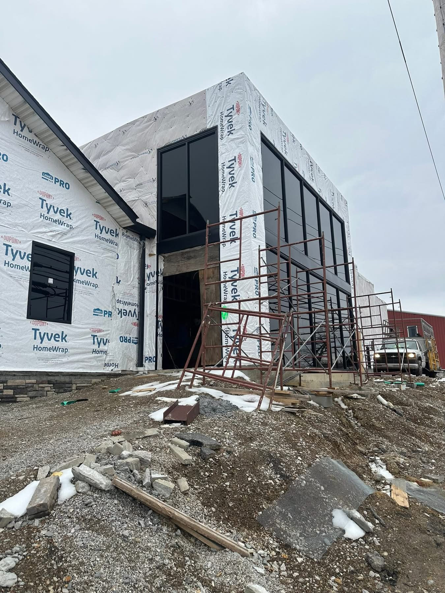
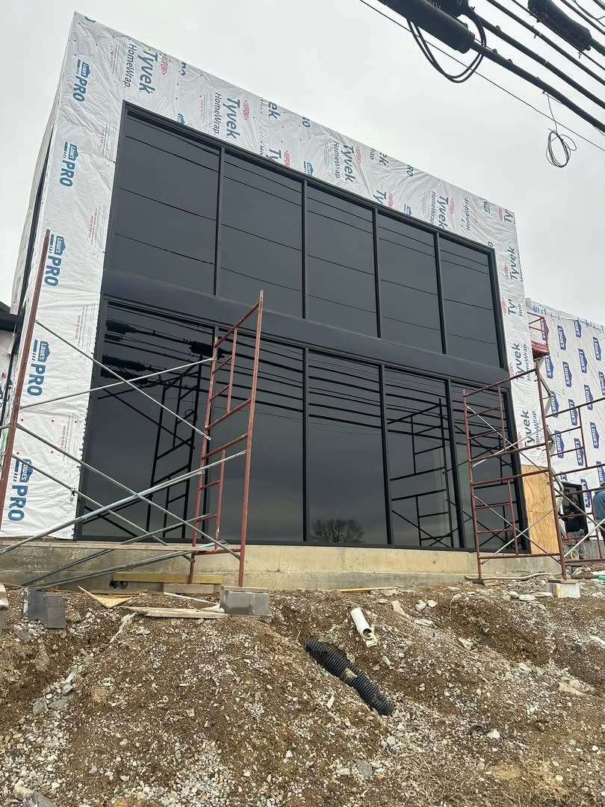
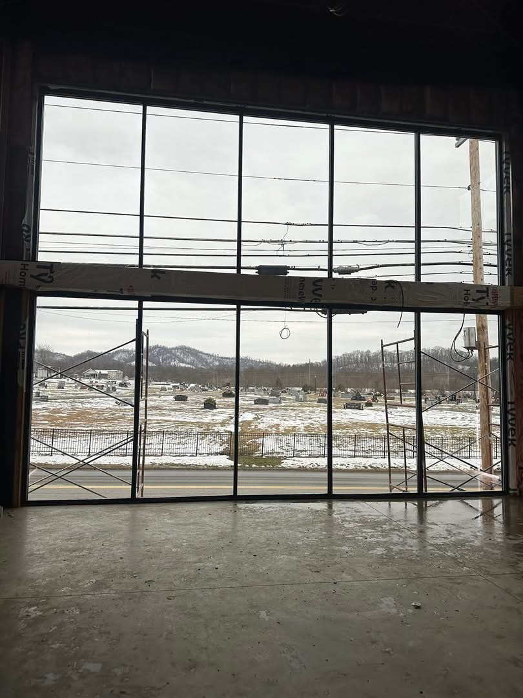
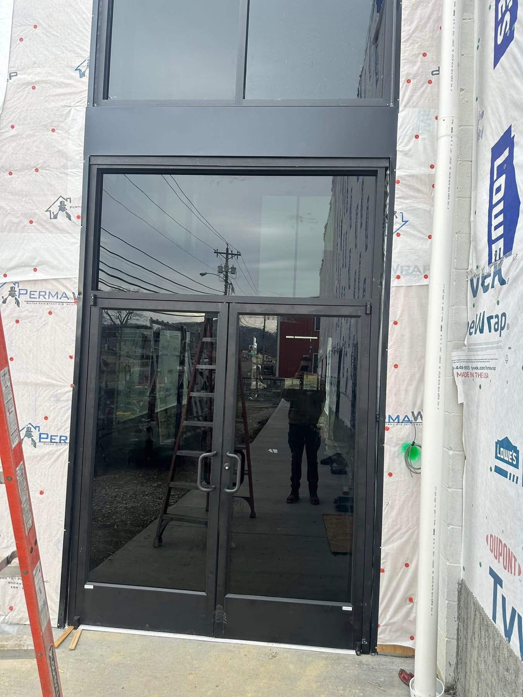
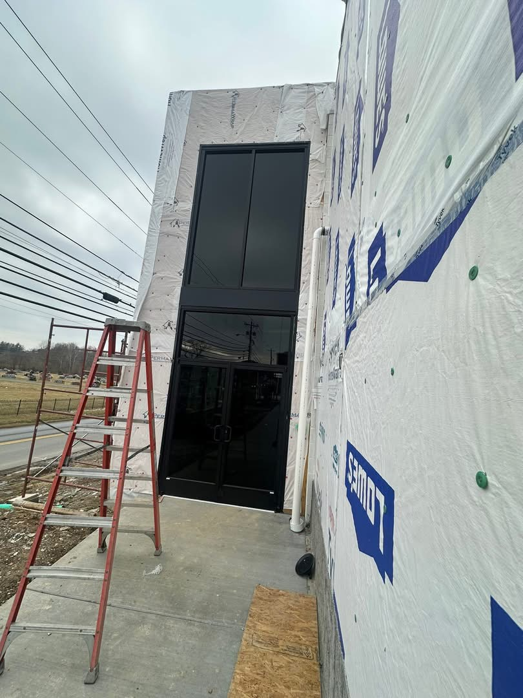
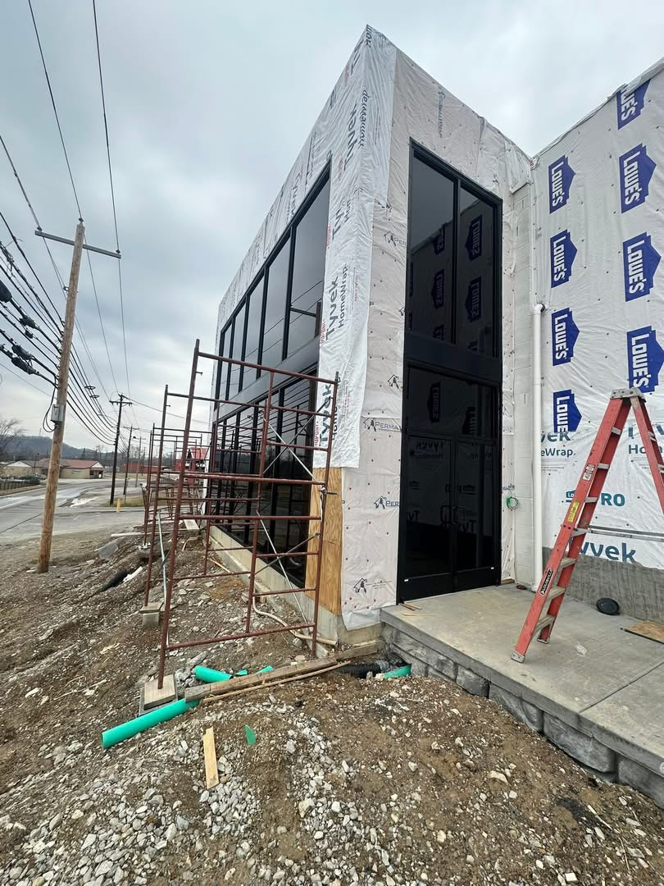

Completed February 3 and February 6, 2026






Biggest and hardest part is finally installed. Nothing like lifting 400lb units up 10 feet in the air.
We would like to shout out our friends and family at Corbin Glass Company for coming to help us tackle this project.
Bear with us for the next few days. Recovery will take a little time after this one.
Super gray glass on black frames definitely looks good.